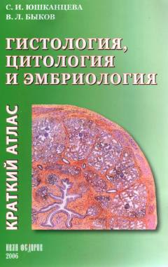

ГЦTibbiyot talabalari uchun histologiya, sitologiya va embriologiyadan amaliy atlas.
Ushbu o'quv qo'llanmasi tibbiyot oliy o'quv yurtlari talabalari uchun histologiya, sitologiya va embriologiya fanlaridan amaliy mashg'ulotlarni o'zlashtirishga mo'ljallangan qisqacha atlasdir. Kitobda hujayralar, to'qimalar va organlarning tuzilishini tushuntiruvchi sxemalar hamda preparatlarning aniq tasvirlari keltirilgan. U tibbiyot, biologiya va veterinariya yo'nalishidagi talabalar, shuningdek, shifokorlar va tadqiqotchilar uchun qo'llanma bo'lib xizmat qiladi.